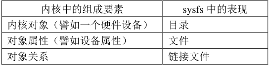

01 应用开发概述
Linux应用开发概述
这里的Linux应用开发，就是在嵌入式Linux板子上进行应用程序的开发，这就涉及到在用户空间控制硬件设备
1.在应用层控制硬件的方法
在应用层控制硬件设备主要有2种方法，其他的一些方法本质上就是对这2种方法之一的封装
1.1对设备节点I/O操作
这种方法应该是我们在学习驱动开发时最常见的控制硬件的方法了，当我们写完驱动并通过mknod或者device_create()创建了设备节点时，就会在/dev路径下产生一个设备节点。对该设备节点进行的I/O操作，会调用到我们编写的驱动中注册的file_operations这个结构体里绑定的I/O回调函数（==其原理暂时还不清楚==），由于回调函数是在内核态注册的，故我们可以直接控制硬件
1.2使用sysfs
sysfs文件系统也是一个虚拟文件系统，与procfs和debugfs类似，主要作用是使用户能在用户态完成对内核的控制/监控
sysfs被Linux挂载在/sys目录下，用于对系统的硬件设备进行管理（其将内核对象的一些属性暴露给用户空间）它可以产生一个包含所有系统硬件层次的视图。
sysfs 文件系统把连接在系统上的设备和总线组织成为一个分级的文件、展示设备驱动模型中各组件的层次关系。sysfs 提供了一种机制，可以显式的描述内核对象、对象属性及对象间关系

系统的各类硬件设备在/sys/class中变成一个个目录，其属性又变成了目录中的一个个文件。用户在用户空间中只需要对特定的属性文件进行I/O操作，就可以读取/改变硬件设备的状态
- 比如我要控制LED，就可以到
/sys/class/leds/找到自己要控制的等，然后改其的属性
一个设备具体有哪些属性文件，这是由Linux内核决定的，比如基于LED子系统的设备就有
britness等属性；基于GPIO子系统的设备就有export等属性。对于不同属性文件，有不同的控制方法，需要看文档
通常基于Linux内核提供的各个设备框架来写驱动的设备，比如LED子系统、GPIO子系统、IIC子系统等等，都有很多属性可以从用户态更改，但是如果不按Linux内核提供的框架来写，那就不行了，除非自己再手动定义
在用户态修改属性文件，不一定非要写个.c文件然后在里面使用open()等系统调用来对其进行I/O操作，在shell中使用echo并重定向到属性文件也可以，并且十分简便：
如：echo 1 > /sys/class/leds/led0/brightness，就可以直接修改LED灯的属性了